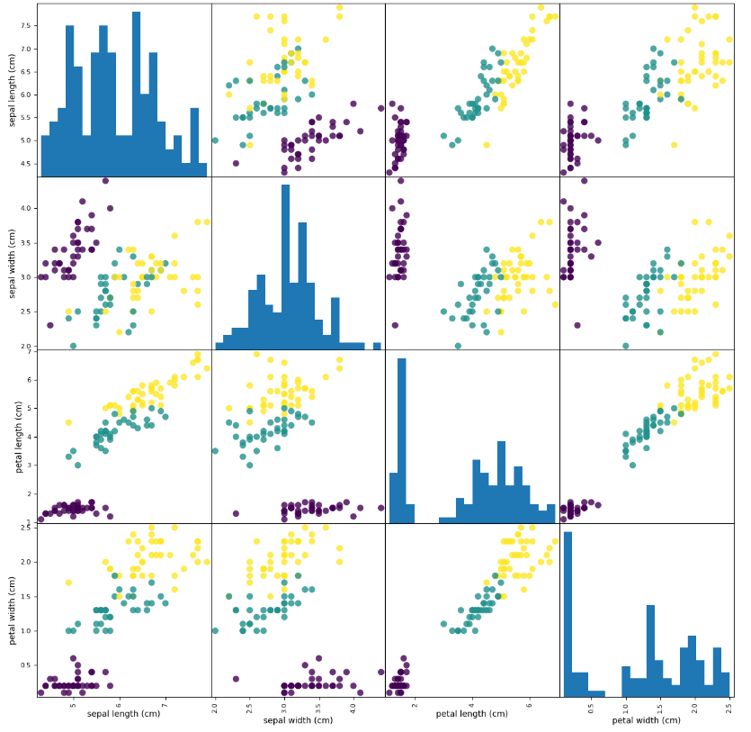

本教程基于scikit-learn数据集iris来进行鸢尾花分类，构建一个机器学习模型 ，可以从这些已知品种的鸢尾花测试数据中进行学习，从而能够预测新鸢尾花的品种。
学习目标：了解进行机器学习的基本流程，了解数据集准备、模型选择、分类算法、模型精度评估,为后续具体算法学习做好准备。
一、初识数据
查看数据集的结构和内容
1
2
3
4
5
6
7
8
9
10
11
12
13
14
| from sklearn.datasets import load_iris
iris_dataset = load_iris()
print(iris_dataset.keys())
print("target_names : \n{}".format(iris_dataset['target_names']))
print("feature_names: \n{} ".format(iris_dataset['feature_names']))
print("shape : {}",iris_dataset['data'].shape)
print(iris_dataset['data'][:5])
print(iris_dataset['target'])
|
1
2
3
4
5
6
7
8
9
10
11
12
13
14
15
16
| dict_keys(['data', 'target', 'frame', 'target_names', 'DESCR', 'feature_names', 'filename', 'data_module'])
target_names :
['setosa' 'versicolor' 'virginica']
feature_names:
['sepal length (cm)', 'sepal width (cm)', 'petal length (cm)', 'petal width (cm)']
shape : {} (150, 4)
[[5.1 3.5 1.4 0.2]
[4.9 3. 1.4 0.2]
[4.7 3.2 1.3 0.2]
[4.6 3.1 1.5 0.2]
[5. 3.6 1.4 0.2]]
[0 0 0 0 0 0 0 0 0 0 0 0 0 0 0 0 0 0 0 0 0 0 0 0 0 0 0 0 0 0 0 0 0 0 0 0 0
0 0 0 0 0 0 0 0 0 0 0 0 0 1 1 1 1 1 1 1 1 1 1 1 1 1 1 1 1 1 1 1 1 1 1 1 1
1 1 1 1 1 1 1 1 1 1 1 1 1 1 1 1 1 1 1 1 1 1 1 1 1 1 2 2 2 2 2 2 2 2 2 2 2
2 2 2 2 2 2 2 2 2 2 2 2 2 2 2 2 2 2 2 2 2 2 2 2 2 2 2 2 2 2 2 2 2 2 2 2 2
2 2]
|
二、准备训练数据和测试数据
我们要用新的数据来评估模型的性能。新数据是指模型之前没有见过的数据，而我们有这些数据的标签。通常的做法是将收集好的带标签的数据分成两部分。一部分数据用于构建机器学习模型，叫作训练数据（training data）或训练集（training set)。其余的数据用来评估模型性能，叫作测试数据（test data)、测试集（test set）或留出集（hold-out set)。
一般选择数据集的75%的行数据及对应标签作为训练集，剩下25%的数据及标签作为测试集。
1
2
3
4
5
6
7
| from sklearn.model_selection import train_test_split
X_train,X_test,y_train,y_test = train_test_split(
iris_dataset['data'],iris_dataset['target'],random_state=0)
print("train shape: {},{} ".format(X_train.shape,y_train.shape))
print("test shape: {},{} ".format(X_test.shape,y_test.shape))
|
1
2
| train shape: (112, 4),(112,)
test shape: (38, 4),(38,)
|
三、观察数据
绘制数据可视化视图，观察数据特征关系。使用pandas DataFrame 绘制散点矩阵图。
1
2
3
4
5
6
| import pandas as pd
# 利用数据集中feature_names中的字符串对数据列进行标记
iris_dataframe = pd.DataFrame(X_train,columns=iris_dataset.feature_names)
print(iris_dataframe.head(10))
# 利用DataFrame创建散点图矩阵，按y_train 即 target 着色
grr = pd.plotting.scatter_matrix(iris_dataframe,c=y_train,figsize=(15,15),marker='o', hist_kwds={'bins':20},s=60,alpha=.8 )
|
1
2
3
4
5
6
7
8
9
10
11
| sepal length (cm) sepal width (cm) petal length (cm) petal width (cm)
0 5.9 3.0 4.2 1.5
1 5.8 2.6 4.0 1.2
2 6.8 3.0 5.5 2.1
3 4.7 3.2 1.3 0.2
4 6.9 3.1 5.1 2.3
5 5.0 3.5 1.6 0.6
6 5.4 3.7 1.5 0.2
7 5.0 2.0 3.5 1.0
8 6.5 3.0 5.5 1.8
9 6.7 3.3 5.7 2.5
|

从图中可以看出，利用花瓣和花萼的测量数据基本可以将三个类别区分开。这说明机器学习模型很可能可以学会区分它们，些数据集可以作为目标训练数据使用。
三、构建模型：K近邻算法
本任务的目标是对花的品种进行分类，所以可以使用分类算法。
要对一个新的数据点做出预测，算法会在训练集中寻找与这个新数据点距离 最近的数据点一将找到的数据点的标签赋值给这个数据点。
K近邻算法中的K的含义是，我们可以考虑训练集中与新数据点最近的任意k个邻居，而不只是考虑最近的那一个。然后我们可以用这些邻居中数量最多的类别做出预测。
1
2
3
| from sklearn.neighbors import KNeighborsClassifier
knn = KNeighborsClassifier(n_neighbors=1)
knn.fit(X_train,y_train)
|
四、执行预测
根据数据特征要求，输入新的预测数据执行模型预测
1
2
3
4
5
6
| import numpy as np
# 输入预测数据，scikit-learn要求必须为NumPy二维数组
X_new = np.array([[5,2.9,1,0.2]])
print(X_new.shape)
prediction = knn.predict(X_new)
print('预测结果为：{}, 对应鸢尾花品种为：{}'.format(prediction, iris_dataset['target_names'][prediction] ))
|
1
| 预测结果为：[0], 对应鸢尾花品种为：['setosa']
|
五、评估模型精度
评估模型精度（accuracy)。
需要用于之前创建的测试集。这些数据用于构建模型，但我们知道测试集中每朵花的实际品种。
因此，我们可以用测试数据中的每朵花进行预测，并将预测结果与标签进行对比。
通过计算精度来衡量模型的优劣，精度就是品种预测正确的花所占的比例。
1
2
3
4
| # 评估方式一：
y_pred = knn.predict(X_test)
print(y_pred)
print('评估测试数据得分：{:.2f}'.format(np.mean(y_pred == y_test)))
|
1
2
3
| [2 1 0 2 0 2 0 1 1 1 2 1 1 1 1 0 1 1 0 0 2 1 0 0 2 0 0 1 1 0 2 1 0 2 2 1 0
2]
评估测试数据得分：0.97
|
1
2
3
| # 评估方式二：
# 使用knn对象的score方法计算测试集的精度
print('评估测试数据得分：{:.2f}'.format(knn.score(X_test, y_test)))
|
该模型得分0.97，即精度为97%。